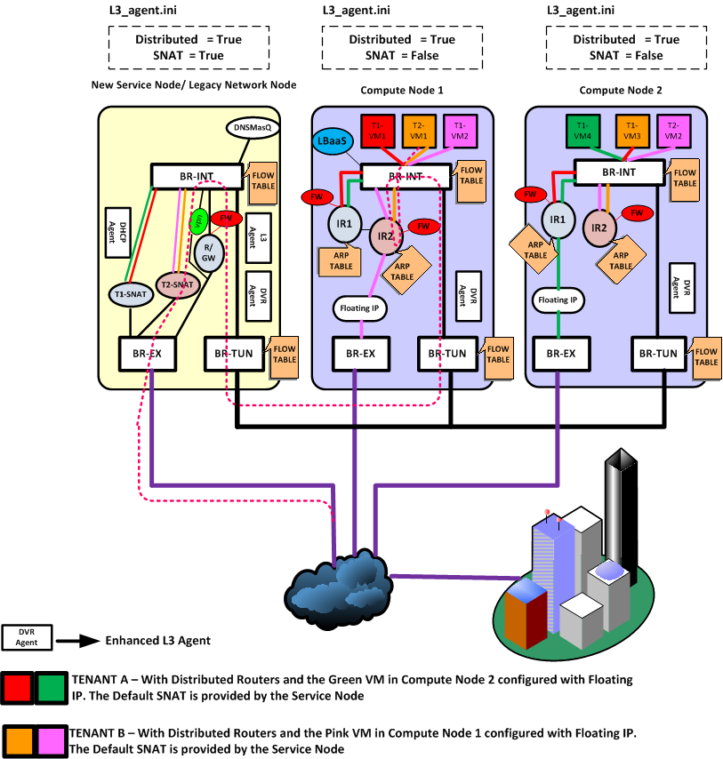
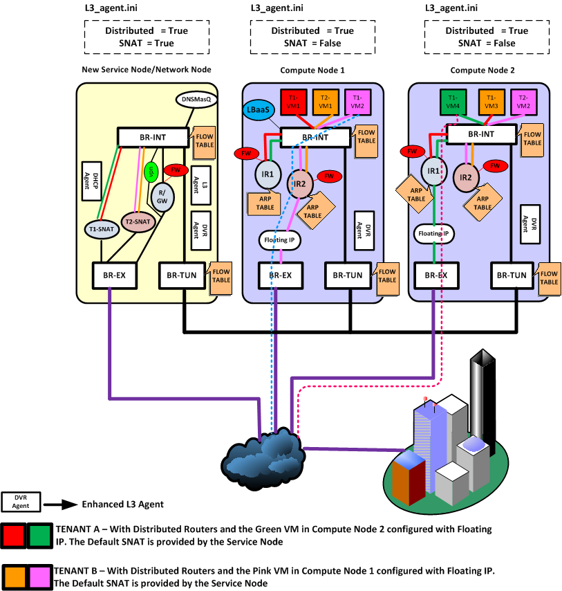

典型场景
从网络的访问看，涉及到路由服务的至少是需要跨子网的访问，又包括是否是同一机器、是否是涉及到外网（东西向 vs 南北向）。
考虑下面几个跨子网路由的典型场景。
| 方向 | 同一机器 | 不同机器 |
|---|---|---|
| 东西 | 本地网桥处理 | 本地东西路由器 |
| 南北 | 本地南北路由器 floating 转发 | 网络节点 SNAT 转发 |
东西向
东西向意味着租户同一个数据中心内不同子网之间的互相访问。
同一机器
对于同一主机上的不同子网之间访问，路由器直接在 br-int 上转发即可，不需要经过外部网桥。
不同机器

如图所示，租户 T1 的两台虚拟机 VM1（计算节点 1）和 VM4（计算节点 2）分别属于不同子网，位于不同的计算节点。VM1 要访问 VM4，由计算节点 1 上的 IR1 起到路由器功能。返程的网包，则由计算节点 2 上的路由器 IR2 起作用。
两个路由器的 id、内部接口、功能等其实都是一样的。即同一个路由器，但是实际上在多个计算节点上同时存在。
这里可能有人会想到，多台同样的路由器，如果都暴露在外部网络上，会出现冲突。例如当 VM1 的请求包离开计算节点 1 时，带的源 mac 是路由器目标接口的 mac，而这个 mac 在计算节点 2 上的路由器上同样存在。
因此，需要拦截路由器对外的暴露信息。一个是让每个路由器只应答本机的 mac 请求；另一个是绝对不让带着路由器 mac 地址的包直接扔出去。实现上在 br-int （应该是br-tun上吧？？）上进行拦截，修改其源 mac 为 tunnel 端口的 mac。同样的，计算节点 2 在 br-int 上拦截源 mac 为这个 tunnel 端口的 mac，替换为正常的子网网关的 mac，直接扔给目标虚拟机所在的主机。
南北向
无 floating IP
这种情况（即 SNAT）下，跟传统模式很类似，首先来看外部访问内部子网。

租户 T2 在外部，通过默认的 SNAT 网关访问内部子网的 vm VM1。此时，网络节点上的 T2-SNAT 起到路由器的作用

反过来，租户 T2 内部子网的 vm VM1 试图访问外部网络，则仍然经过网络节点上的 T2-SNAT 路由器。
为何这种情况下必须从网络节点走？这是因为对于外部网络来说，看到的都是外部接口的地址，这个地址只有一个。
当然，如果以后每个计算节点上都可以带有这样一个 SNAT 默认外部地址的话，这种情况下的流量也是可以直接从计算节点出去的。
有 floating IP

这种情况下，计算节点上的专门负责的外部路由器将负责进行转发，即计算节点 1 上的 IR2 和计算节点 2 上的 IR1。